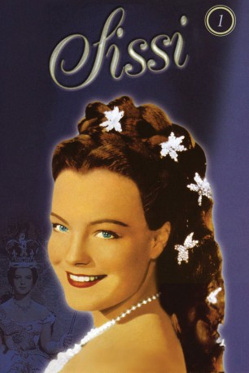

#4178 Sissi 1
 
 IMDB-Wertung: 7.0 / 10
IMDB-Wertung: 7.0 / 10  Metascore: 0
Metascore: 0 
Der österreichische Kaiser Franz Joseph ist verliebt. Jedoch nicht in Prinzessin Nené, die seine Mutter Erzherzogin Sophie für ihn als zukünftige Kaiserin Österreichs ausgesucht hat. Sissi, die jüngere Schwester von Nené ist das Mädchen, dem er sein Herz schenken will. Franz Joseph ist hingerissen von ihrer Anmut und Schönheit. Sissi will aber dem Glück von Nené nicht im Wege stehen und möchte sich zurückziehen.Aber der junge Kaiser verkündet kurzentschlossen bei einem großen Empfang seine Verlobung mit Sissi - zum Entsetzen seiner Mutter. Bald reist Sissi über die Donau in ihre zukünftige Heimat Österreich. Die Wiener lieben ihre neue Prinzessin, und sie bereiten ihr zur Hochzeit einen prächtigen Empfang.
Jahr: 1955
Dauer: 105 Minuten
FSK: 6
Land: Österreich Studio: Herzog-FilmverleihTonspuren:
Untertitel:
Auflösung: 1080p (1920x1080) Größe: 16793 MB
Genre: Komödie, Drama, Geschichte, Liebe
Regisseur: Ernst Marischka
Drehbuch: Torsten Wenzel
Soundtrack:
Darsteller:
 Romy Schneider als Sissi
Romy Schneider als Sissi Karlheinz Böhm als Kaiser Franz Joseph
Karlheinz Böhm als Kaiser Franz Joseph- Magda Schneider als Duchess Ludovika in Bayern / Vickie
 Gustav Knuth als Duke Max in Bavaria
Gustav Knuth als Duke Max in Bavaria- Peter Weck als Archduke Carl-Ludwig
- Uta Franz als Princess Helene in Bayern / Nene
- Vilma Degischer als Archduchess Sophie
- Josef Meinrad als Gendarmerie-Major Böckl
- Erich Nikowitz als Archduke Franz Karl
- Karl Fochler als Graf Grünne
- Franz Böheim als Johann Petzmacher
- Hilde Wagener als Baronin Wulffen
- Egon von Jordan als Graf Arco, Prime Minister
- Richard Eybner als Postmeister von Ischl
- Otto Treßler als Feldmaerschall Radetzky
- Ulrich Bettac als
Datei: X:\3-Trilogie(N-Z)\Sissi\Sissi 1 (1955, FSK6, 1920x1080).mkv seit 28.07.2016
Festplatte: HD Collection-3(N-Z)-6(A-Z)
 Alle Filme aus Gruppe '3-Trilogie(N-Z)\Sissi'
Alle Filme aus Gruppe '3-Trilogie(N-Z)\Sissi'